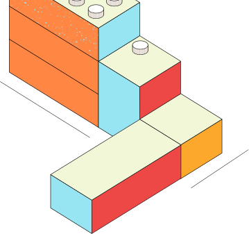
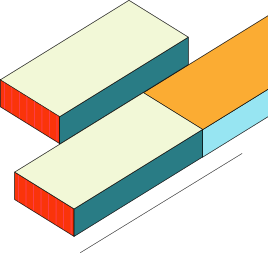
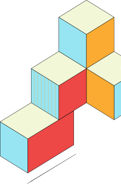
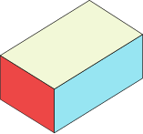
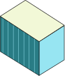
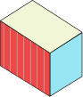
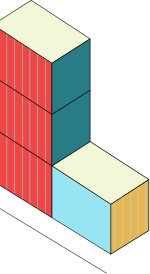
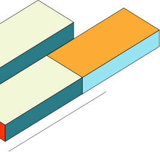
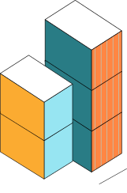
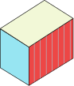

Curated By Antler To Help Founders Navigate Resources,
Networks And Capital Available At Every Stage Of The Journey
/Interactive Map/
Every resource on the Compass, pinned on a map. Explore incubators, VCs, co-working hubs and communities across the Bangalore startup ecosystem.
/Network Details/
Curated resources across every stage of your founder journey — from incubation and community to venture capital and strategic family offices.